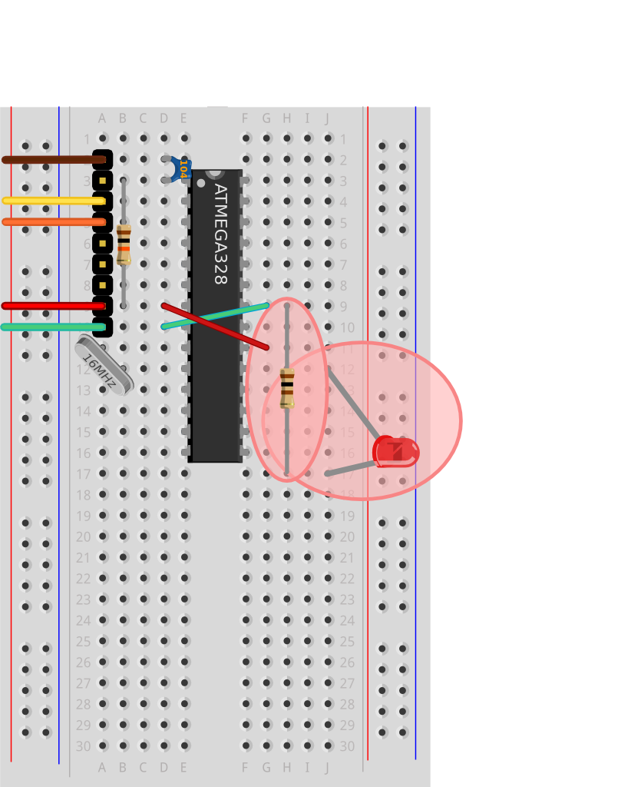
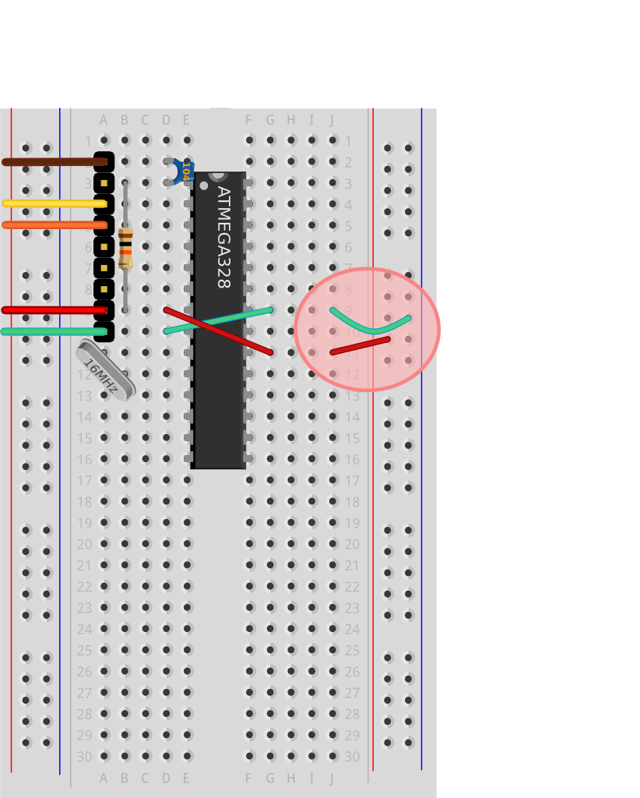
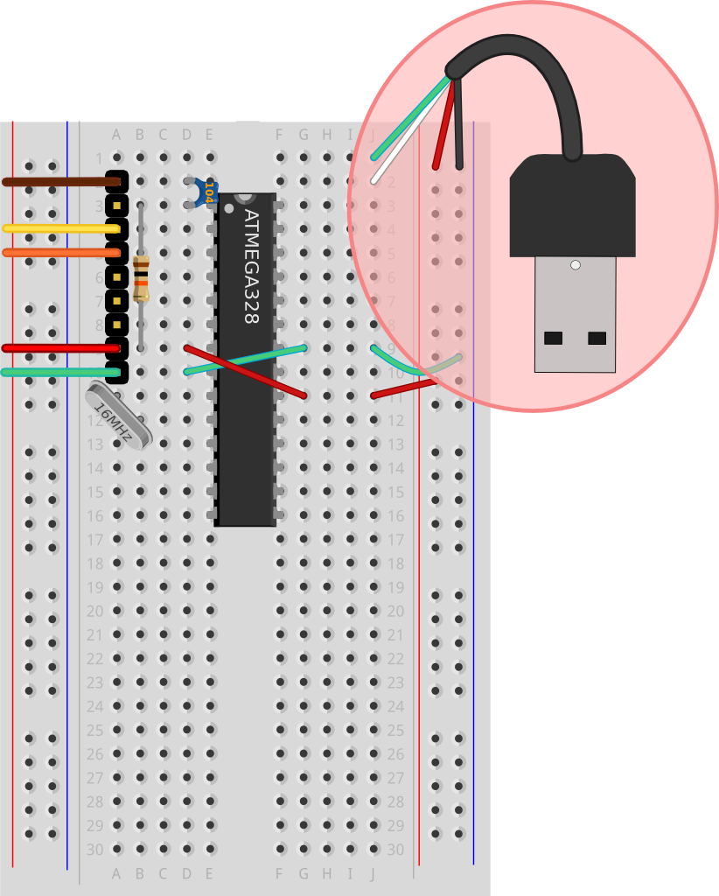
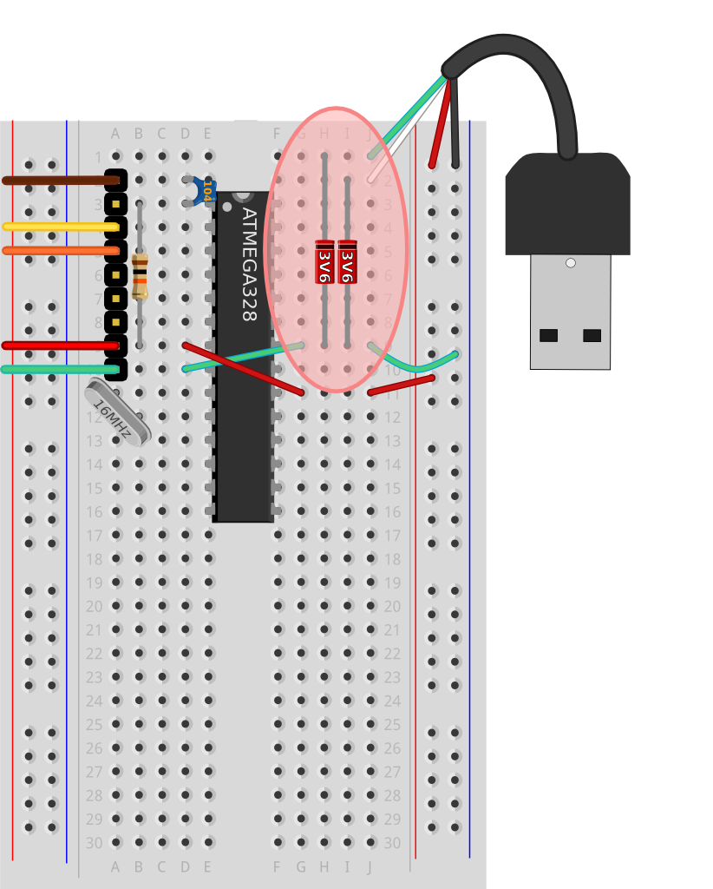
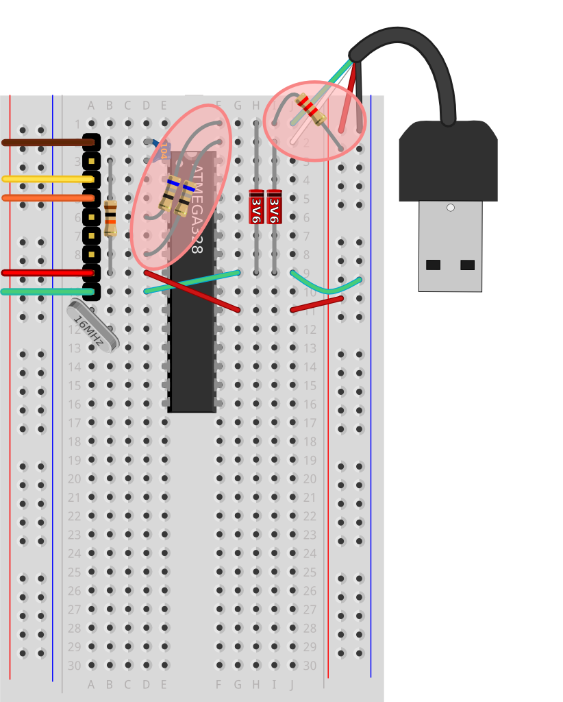
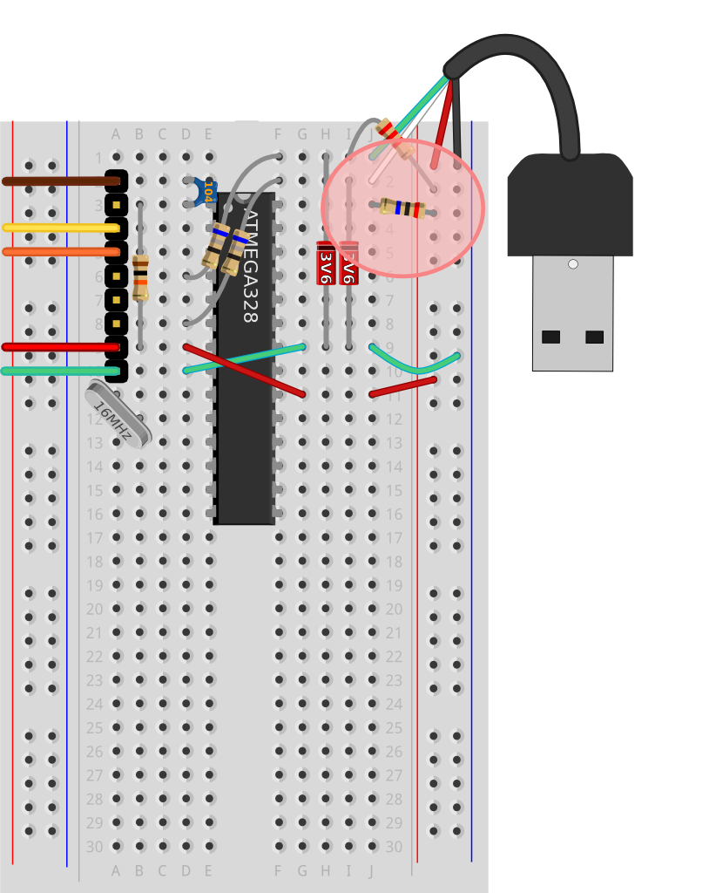
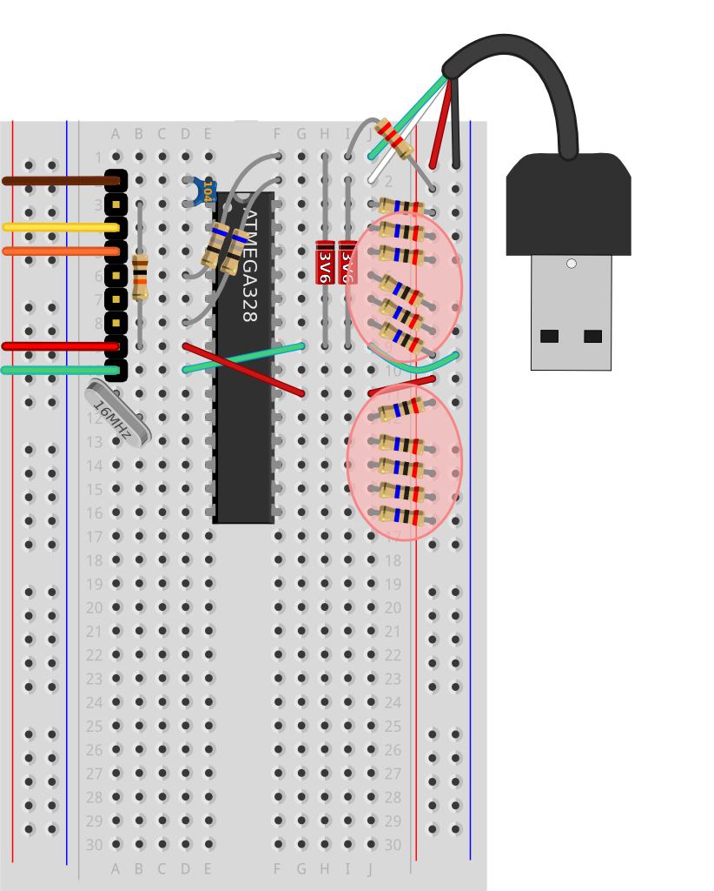
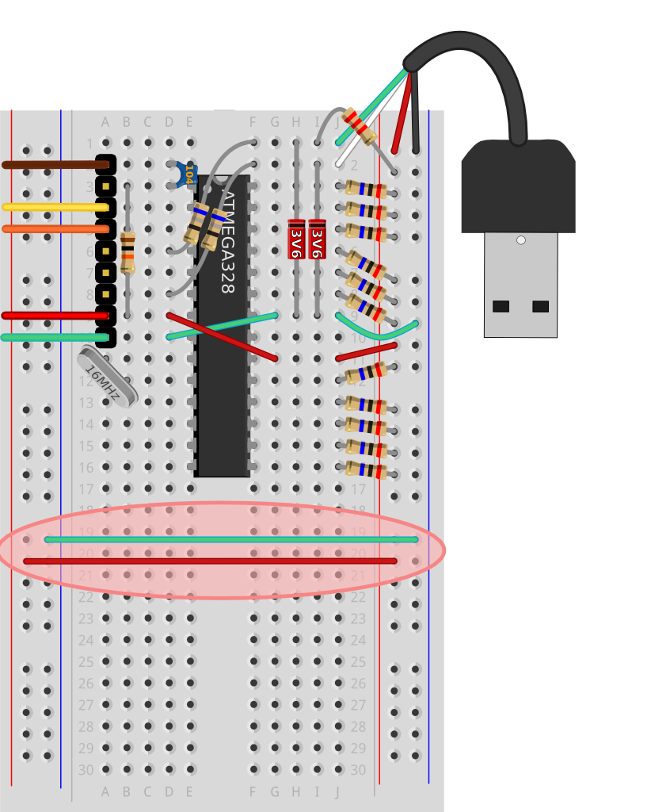
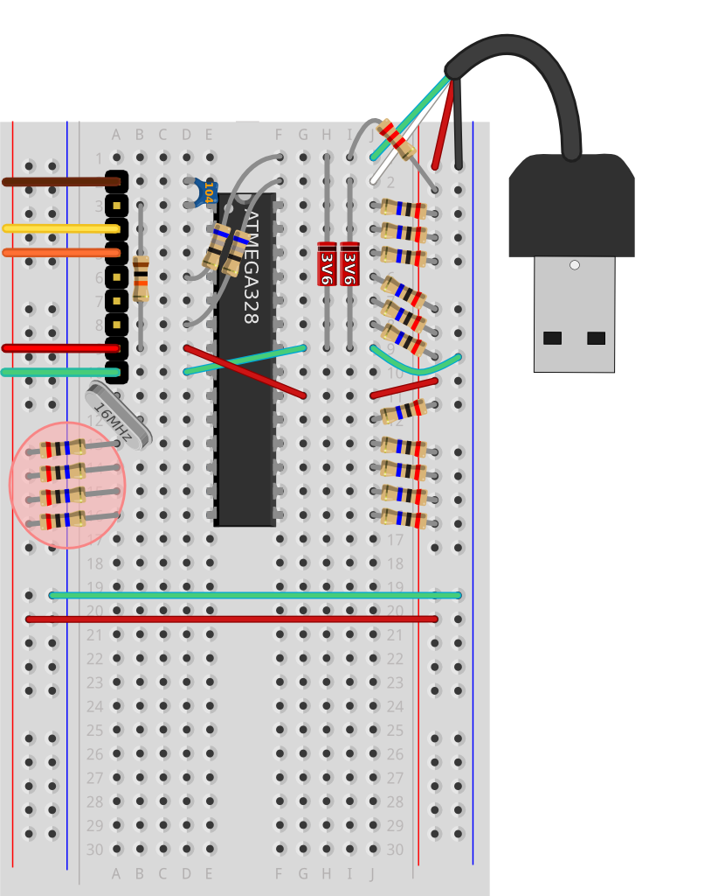
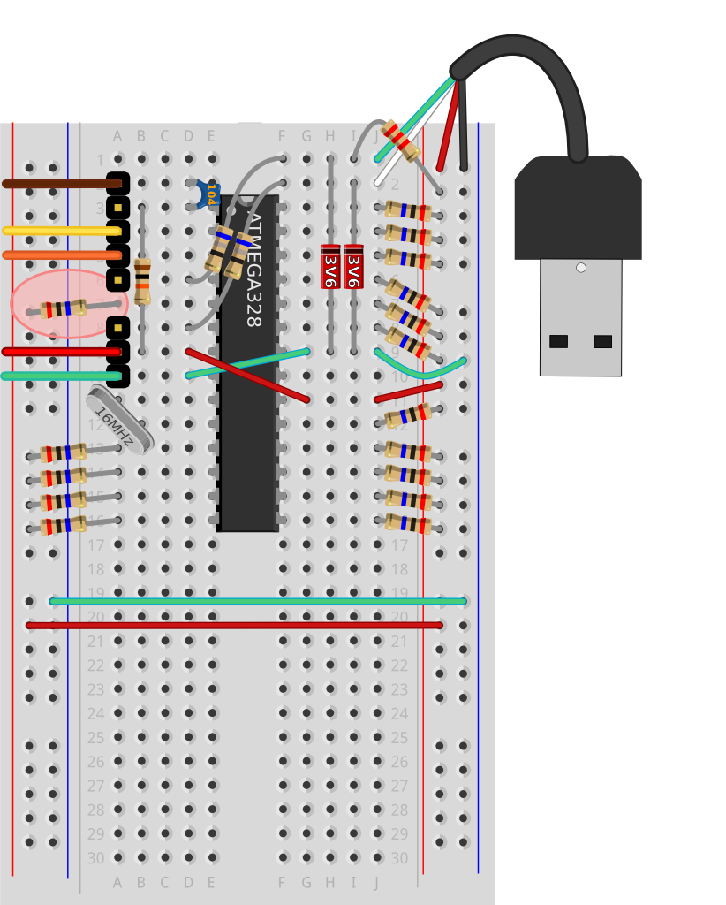

This guide provides details for learners to wire, program and configure a @ShrimpingIt conductive keyboard.
For orientation, see the Conductive Keyboard project page.

This guide provides details for learners to wire, program and configure a @ShrimpingIt conductive keyboard. For orientation, see the Conductive Keyboard project page. | |
The build assumes you have the following kits...
For convenience, pre-bagged kits are available to order from @ShrimpingIt online. If you do not wish to buy from us, information is provided for you to source commodity parts direct from electronics wholesalers. In addition you will need a Linux, Mac or Windows computer running the latest Arduino IDE. Mac and Windows computers need a CP2102 driver to be installed for the USB Programmer to be recognised. |
Before embarking on the Conductive Keyboard, you should have successfully completed the Blink build. This build uses the Blink circuit as its starting point. |
You can remove the Blink LED and resistor as these are not used in the circuit, and it will be easier to wire the circuit with them out of the way. |  |
The power rails on the right must be connected to the ATMEGA's power pins, and hence back to the CP2102 power from our laptop. These power rails will be used to provide the +5V signal for the Right-hand Pull-ups which are so fundamental to the behaviour of a MakeyMakey. We'll also be connecting from the right hand power rails to the left hand power rails so that Pull-ups can be attached on the left hand side. Finally, the right-hand power rails will be a convenient place to connect the +5V and 0V of the USB cable (so the project can be powered and act as a keyboard, even when the UART is removed). Attach a Green wire from J9 horizontally and slightly down to the -ive (Blue) power rail on the right |  |
When complete, our system will emulate a USB 1.1 keyboard. A USB 1.1 cable is made up of four wires with a standard color code. @ShrimpingIt kits contain a Male type A plug chopped from the end of a generic USB cable, with male header pins crimped to the exposed colored wires (guaranteeing good breadboard connectivity). However, any USB cable you chop in half will do. You can solder pins on the end, or slide the stranded wire carefully into breadboard holes before jamming in a set of male header pins to hold them in place and in contact. Two of the wires provide power +5V (Red) and 0V (Black), which must be connected to the power rails. The other two wires are known as Data+ or D+ (Green) and Data- or D- (White), and are used for signalling at 3.6V data back and forth between the host (laptop) and the peripheral device (keyboard). We will be attaching these to some free rows above the ATMEGA chip, where we can make the other special connections required. Attach Data+ Green wire to J1 |  |
The Data+ (Green USB) and Data- (White USB) wires are both expected to send at a maximum of 3.6V. A diode is a device which normally operates like a water valve, which allows current to flow freely in one direction, but entirely blocks the flow of current in the other direction (like a a very high or infinite resistance to current flow). However, a Zener is a special kind of diode. It is more like a leaky water valve which 'breaks down', (equivalent to very low resistance), when the reverse pressure (voltage) applied exceeds a certain threshold. We can use this feature of Zeners to ensure that the Green and White wires have a maximum of 3.6V output, even though they are being driven by the ATMEGA328's 5V output pins. Essentially, any voltage above 3.6V is allowed to bleed away through the Zener. |  |
We're using software control of the ATMEGA's pin 4 and pin 6 to generate a signal conforming to a USB 1.1 keyboard standard, but the signal is at 5V when it should be at 3.6V to be conformant. Two 68Ohm resistors are used for the connections instead of wires. When pin 4 or 6 are at +5V, the 68Ohm resistors from pins 4 and 6 will consume around 1.4V of the 5V signal, before it reaches the USB cable. The signal departing over the USB Data+ (Green) or Data- (White) will then be around 3.6V, satisfying the USB 1.1 standard. The 2.2kOhm resistor is a pullup resistor. The presence of this resistor (and the strength of its pull) can be detected by the laptop when you connect the conductive keyboard, and it indicates that the laptop should try to connect at USB 1.1 'full speed' - 12.1 Mega bits-per-second. Each of the colored bands corresponds with a single figure number in the resistor code. Resistor codes begin at the end opposite the gold (quality) stripe. The 68Ohm resistors have Blue, Grey, Black for a code sequence 6, 8, 0. The first two figures of the resistance in Ohms are 6 and 8, and this should be followed by no extra zeroes, in other words 68() or 68Ohms. The 2.2 kOhm resistors have Red, Red, Red for a code sequence 2, 2, 2. The first two figures are 2 and 2, and this should be followed by two extra zeroes, in other words 22(00) or 2,200 Ohms. There are 1000 Ohms in a kiloOhm so that's the same as 2.2 kOhms. Connect a 68Ohm resistor from d6 to f1 |  |
When we're not touching a pad on the conductive keyboard, the only connection to the ATMEGA's top-right pin will be a 20 MegaOhm resistor pulling it to nearly +5V. This +5V signal is an indication to the ATMEGA that we're not touching the pad. When we touch a pad on the conductive keyboard, our bodies provide the connection to 0V (Ground). Because our body's has a lower-resistance connection to ground than the 20MegaOhm connection to 5V, our body can pull down the ATMEGA's sensing pin to nearly 0V. This 0V connection made through our body is an indication to the ATMEGA that we are touching the pad. The 20 MegaOhm resistors have Red Black, Blue for a code sequence 2, 0, 6. The first two figures are 2 and 0, and this should be followed by six extra zeroes, in other words 20(000000) Ohms. There are 1000000 Ohms in a MegaOhm so that's the same as 20 MegaOhms. Connect a 20MegaOhm resistor between j3 and the next free hole on the right-hand +ive (Red) power rail |  |
Connect 20MegaOhm resistors from j4,j5,j6,j7,j8,j12,j13,j14,j15,j16 to the next free holes on the right-hand +ive (Red) power rail |  |
If we want more than 11 keys on our keyboard, we need to start using sensing pins from the left-hand side of the ATMEGA chip. It is convenient to activate the left-hand +ive power rails by attaching a +5V connection for the left-hand pullup resistors we will need. As good practice, we're also activating the ground rail, otherwise we may rely on it being connected by mistake. Attach a Green wire from the Right Hand -ive (Blue) power rail to the Left Hand -ive (Blue) power rail |  |
A set of four digital pullups are really easy to connect on the left, giving us a total of 15 keys so far. See Step 6 for details how to identify a 20MegaOhm resistor. Attach 20MegaOhm resistors from j16,j15,j14,j13 to the nearest holes on the Left-hand +ive (Red) power rail |  |
If you really need the full set of 16 sensor pins to be active, you'll need to change the 9-pin header, removing one of the pins for convenience, so the pullup can be added. Replace the programming header, leaving 5 pins at the top, a one-pin gap, and 3 further pins below. |  |